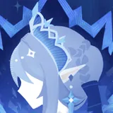

Chương VII · Màn VI
Ngày Hôm Qua Gửi Từ Bờ Bên Kia
Nhiệm vụ Ma Thần — Snezhnaya
Nhân vật xuất hiện
 Nhân vật chính · Nhà Lữ HànhLumineNhà Lữ Hành đến từ thế giới khác. Bị vị thần lạ mặt phong ấn và cướp mất người anh song sinh, cô bắt đầu hành trình đi tìm Bảy Vị Thần của Teyvat.
Nhân vật chính · Nhà Lữ HànhLumineNhà Lữ Hành đến từ thế giới khác. Bị vị thần lạ mặt phong ấn và cướp mất người anh song sinh, cô bắt đầu hành trình đi tìm Bảy Vị Thần của Teyvat. Bạn đồng hànhPaimonĐược Lumine cứu khỏi chết đuối hai tháng trước, Paimon tự nhận làm người dẫn đường cho cô. Hay ăn, hay nói, và rất ghét bị gọi là “thực phẩm dự trữ”.
Bạn đồng hànhPaimonĐược Lumine cứu khỏi chết đuối hai tháng trước, Paimon tự nhận làm người dẫn đường cho cô. Hay ăn, hay nói, và rất ghét bị gọi là “thực phẩm dự trữ”.
Triều đình Snezhnaya & các chiến hữu SnezhnogradAnastasya · Pierro · Valeriy · Mitya · Odette · Vodyanitsa · AlyoshaCùng chung bước trong chương khép lại hành trình qua bảy quốc gia.- TĐại công tước fae cổ đại · Chủ nhân ProtakropolisTysyatsky NoyBậc vương công fae cổ đại đồng hành trong biến cố cuối cùng tại Snezhnaya.
- Những người bạn MondstadtVenti · Varka · Jean · Diluc · Kaeya · AmberHòa cùng tiếng vọng cổ xưa từ Sal Vindagnyr trên ngọn gió Long Tích Tuyết Sơn.
 Hội Ma NữAlice · NicoleTiếp tục dõi theo và hỗ trợ bước ngoặt cuối cùng của hành trình Teyvat.
Hội Ma NữAlice · NicoleTiếp tục dõi theo và hỗ trợ bước ngoặt cuối cùng của hành trình Teyvat. Đại diện Liyue và nghệ nhân NatlanNingguang · XilonenGóp mặt trong bản hòa âm đa quốc gia của đoạn kết.
Đại diện Liyue và nghệ nhân NatlanNingguang · XilonenGóp mặt trong bản hòa âm đa quốc gia của đoạn kết.- Phái đoàn InazumaRaiden Shogun · Yae Miko · Kamisato Ayato · Kamisato Ayaka · Thoma · Sangonomiya Kokomi · Kujou Sara · Kujou KamajiĐón nhận những dư âm từ Lôi Điểu và khép lại kỷ nguyên mới trên Quần Đảo Inazuma.
 Thảo Quốc Sumeru & các cổ thần DeshretNahida · Tighnari · Nilou · Naphis và Cyrus · Thoth · HeryshafChứng kiến Trạm Cuối Akasha Mới và những mô phỏng mộng cảnh tái hiện Shouki no Kami cùng Trái Tim Ốc Đảo của Apep.
Thảo Quốc Sumeru & các cổ thần DeshretNahida · Tighnari · Nilou · Naphis và Cyrus · Thoth · HeryshafChứng kiến Trạm Cuối Akasha Mới và những mô phỏng mộng cảnh tái hiện Shouki no Kami cùng Trái Tim Ốc Đảo của Apep.- Các chiến binh Natlan & Dạ ThầnMavuika · Citlali · Kachina · Kinich · Ajaw · Mualani · Chasca · Ifa · Ororon · Iansan · Varesa · YohualtecuhtinQuy tụ cùng toàn bộ sáu bộ tộc trước bình minh kỷ nguyên mới tại Đấu Trường Lửa Thánh.
 Đại diện Fontaine và Nod-KraiNeuvillette · Furina · IneffaThủy Long Vương tới Inazuma trong khi Furina (cùng ba Tạo Vật Salon) và Ineffa xuất hiện tại Natlan.
Đại diện Fontaine và Nod-KraiNeuvillette · Furina · IneffaThủy Long Vương tới Inazuma trong khi Furina (cùng ba Tạo Vật Salon) và Ineffa xuất hiện tại Natlan. Đảo Thiên Không & hồi ức người thânGương Ánh Sáng · Nukvah · AetherHệ thống tính toán tổng hợp tại “Ngai Thần” trên Đảo Thiên Không và mảnh ký ức ngắn của Lumine về Aether.
Đảo Thiên Không & hồi ức người thânGương Ánh Sáng · Nukvah · AetherHệ thống tính toán tổng hợp tại “Ngai Thần” trên Đảo Thiên Không và mảnh ký ức ngắn của Lumine về Aether.
Các phần
- Phần 1Thí Luyện Của Kẻ Vượt Quyền
- Phần 2Làn Gió Và Tự Do
- Phần 3Sấm Sét Và Vĩnh Hằng
- Phần 4Cỏ Cây Và Trí Tuệ
- Phần 5Ngọn Lửa Và Chiến Tranh
- Phần 6Gõ Cửa Hồi Kết
Toàn bộ lời thoại được lấy từ bản tiếng Việt chính thức của trò chơi. Ở những đoạn người chơi được chọn câu trả lời, truyện chọn một lựa chọn duy nhất.